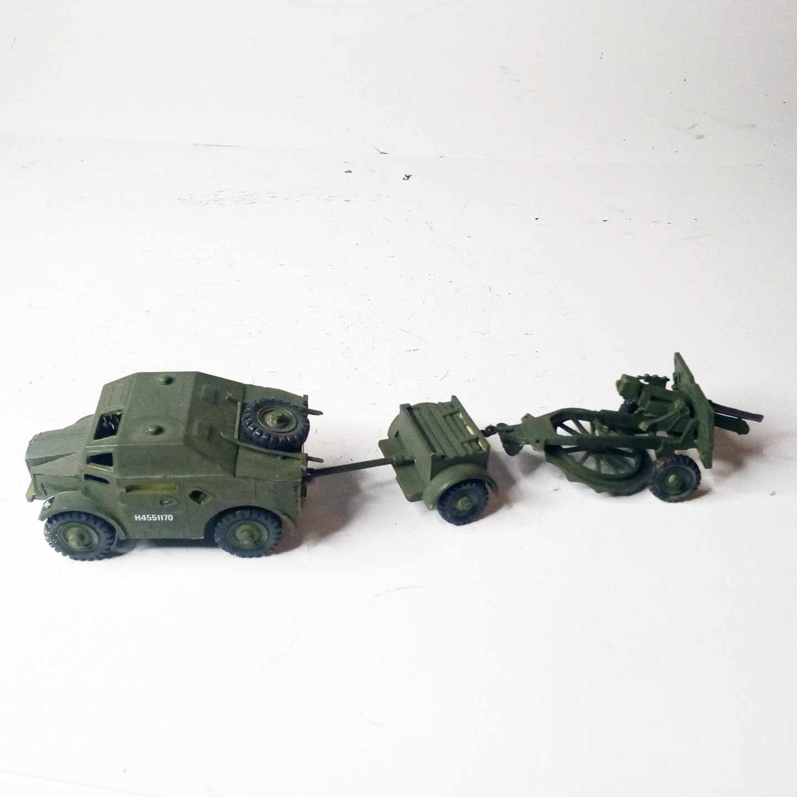

Mezzi militari · scale model archive
25PDR Field Gun & Quad
25PDR Field Gun & Quad — Kit: Airfix, Scale: 1/72. lovely little roadtrain #1/72 #Airfix #Quad

Photo gallery
English description
lovely little roadtrain
#1/72 #Airfix #Quad
Descrizione italiana
Un delizioso piccolo convoglio stradale.